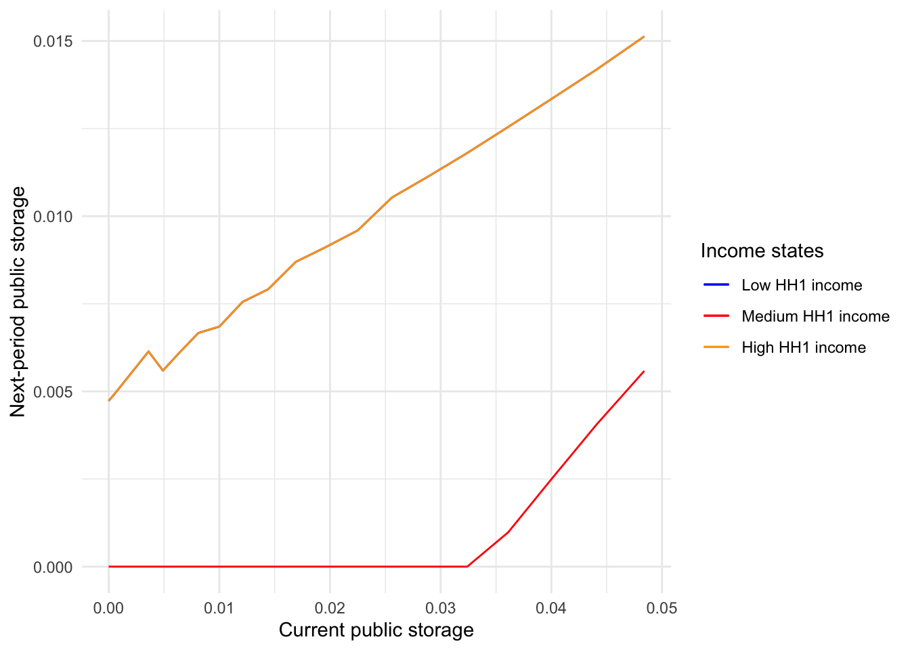
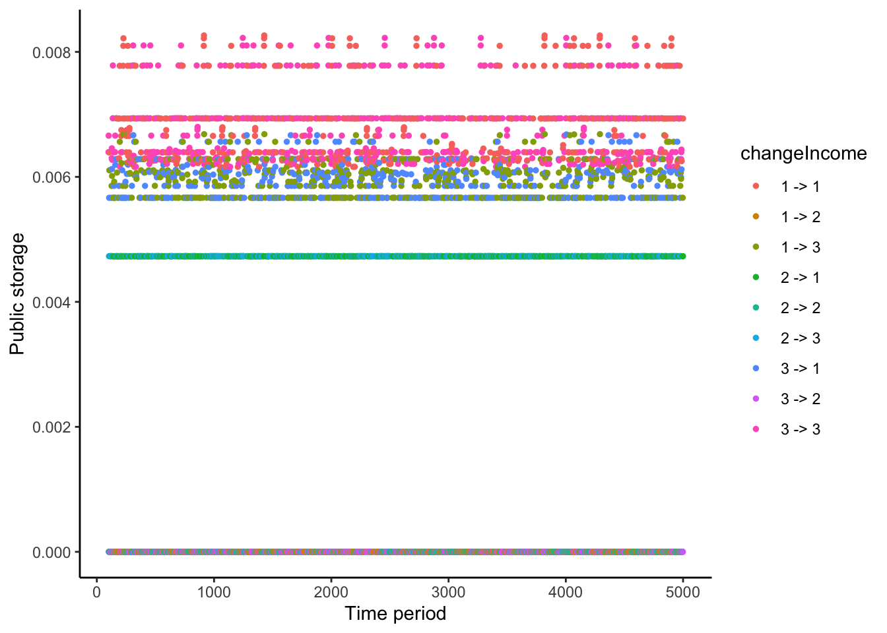
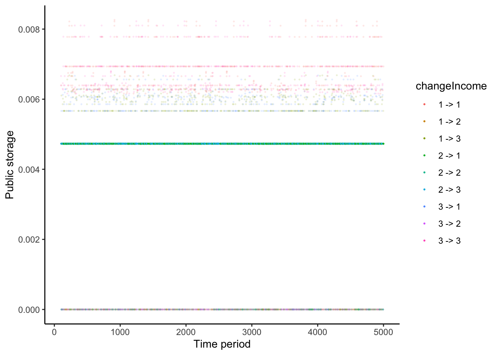

pacman::p_load(
tidyverse,
pracma,
latex2exp,
ggrepel
)3 Risk sharing with limited commitment and storage: Simulation
modelSolutionList <- readRDS(
file.path('IntermediateData/modelSolution.rds')
)
relativeParetoWeightsBoundsArray <- modelSolutionList[[3]]
nextStorageArray <- modelSolutionList[[4]]set.seed(123)
incomeSeq <- sample(seq(1, numStates), size = simSize, replace = TRUE)
storageSeq <- c(0)
relativeParetoWeightSeq <- c(1)
consHH1Seq <- c()
for (i in seq(1, simSize)) {
storageSeq <- c(
storageSeq,
interp2(
x = storageGridPoints,
y = relativeParetoWeightsGridPoints,
Z = nextStorageArray[incomeSeq[i], , ],
xp = storageSeq[i] %>%
pmin(max(storageGridPoints)) %>%
pmax(min(storageGridPoints)),
yp = relativeParetoWeightSeq[i] %>%
pmin(max(relativeParetoWeightsGridPoints)) %>%
pmax(min(relativeParetoWeightsGridPoints)),
method = "linear"
)
)
relativeParetoWeightSeq <- c(
relativeParetoWeightSeq,
relativeParetoWeightSeq[i] %>%
pmax(
approx(
storageGridPoints,
relativeParetoWeightsBoundsArray[
1,
incomeSeq[i],
],
storageSeq[i],
rule = 2
)$y
) %>%
pmin(
approx(
storageGridPoints,
relativeParetoWeightsBoundsArray[
2,
incomeSeq[i],
],
storageSeq[i],
rule = 2
)$y
)
)
consHH1Seq <- c(
consHH1Seq,
calculateHH1Consumption(
(
aggregateIncomeGridPoints[incomeSeq[i]]
+ (1 + returnOnStorage) * storageSeq[i]
- storageSeq[i + 1]
),
relativeParetoWeightSeq[i + 1],
sigma
)
)
}
simulationResult <- tibble(
period = seq(1, simSize),
income = incomeSeq,
storage = storageSeq[2:(simSize + 1)],
consHH1 = consHH1Seq
) %>%
mutate(
previousIncome = lag(income),
changeIncome = paste(as.character(previousIncome), '->', as.character(income))
)3.1 Storage and consumption at the steady state
simulationResult %>%
filter(period >= 100) %>%
ggplot(aes(x = period, y = storage)) +
geom_point() +
xlab('Time period') +
ylab('Public storage') +
theme_classic()simulationResult %>%
filter(period >= 100) %>%
ggplot(aes(x = period, y = consHH1)) +
geom_point() +
xlab('Time period') +
ylab('HH1 consumption') +
theme_classic()3.2 Relative Pareto weight intervals
tibble(
storage = storageGridPoints,
x_l_1 = relativeParetoWeightsBoundsArray[1,1,],
x_l_2 = relativeParetoWeightsBoundsArray[1,2,],
x_l_3 = relativeParetoWeightsBoundsArray[1,3,],
x_h_1 = relativeParetoWeightsBoundsArray[2,1,],
x_h_2 = relativeParetoWeightsBoundsArray[2,2,],
x_h_3 = relativeParetoWeightsBoundsArray[2,3,]
) %>%
ggplot() +
geom_line(aes(x = storage, y = x_l_1, color = 'a')) +
geom_line(aes(x = storage, y = x_l_2, color = 'b')) +
geom_line(aes(x = storage, y = x_l_3, color = 'c')) +
geom_line(aes(x = storage, y = x_h_1, color = 'd')) +
geom_line(aes(x = storage, y = x_h_2, color = 'e')) +
geom_line(aes(x = storage, y = x_h_3, color = 'f')) +
scale_color_manual(
name = "End-points",
values = c(
"blue",
"purple",
"brown",
"red",
"orange",
"gray"
),
labels = unname(TeX(c(
"$\\underline{x}_1$",
"$\\underline{x}_2$",
"$\\underline{x}_3$",
"$\\bar{x}_1$",
"$\\bar{x}_2$",
"$\\bar{x}_3$"
)))
) +
theme_minimal() +
scale_y_log10() +
xlab('Public storage') +
ylab('Relative Pareto weight')3.3 Storage behavior
tibble(
storage = storageGridPoints,
x1 = nextStorageArray[1,101,],
x2 = nextStorageArray[2,101,],
x3 = nextStorageArray[3,101,],
) %>%
filter(storageGridPoints < 0.05) %>%
ggplot() +
geom_line(aes(x = storage, y = x1, color = 'a')) +
geom_line(aes(x = storage, y = x2, color = 'b')) +
geom_line(aes(x = storage, y = x3, color = 'c'))
tibble(
storage = storageGridPoints,
x1 = nextStorageArray[1,51,],
x2 = nextStorageArray[2,51,],
x3 = nextStorageArray[3,51,],
) %>%
filter(storageGridPoints < 0.05) %>%
ggplot() +
geom_line(aes(x = storage, y = x1, color = 'a')) +
geom_line(aes(x = storage, y = x2, color = 'b')) +
geom_line(aes(x = storage, y = x3, color = 'c'))## Transition in storagesimulationResult %>%
filter(period >= 100) %>%
mutate(cond = (income == 2)) %>%
ggplot() +
geom_point(aes(x = period, y = storage, color = changeIncome), size = 1.0) +
xlab('Time period') +
ylab('Public storage') +
theme_classic()3.3.1 No income inequality state
simulationResult %>%
filter(period >= 100) %>%
mutate(cond = (income == 2)) %>%
mutate(alpha = 1 * cond + 0.01 * (!cond)) %>%
ggplot() +
geom_point(aes(x = period, y = storage, color = changeIncome, alpha = alpha), size = 0.3) +
scale_alpha(guide = "none") +
xlab('Time period') +
ylab('Public storage') +
theme_classic()
3.3.2 From no income inequality to some inequality
simulationResult %>%
filter(period >= 100) %>%
mutate(cond = (income != 2 & previousIncome == 2)) %>%
mutate(alpha = 1 * cond + 0.2 * (!cond)) %>%
ggplot() +
geom_point(aes(x = period, y = storage, color = changeIncome, alpha = alpha), size = 0.3) +
scale_alpha(guide = "none") +
xlab('Time period') +
ylab('Public storage') +
theme_classic()3.3.3 Consecutvive states with some income inequality
simulationResult %>%
filter(period >= 100) %>%
mutate(cond = (income != 2 & previousIncome != 2)) %>%
mutate(alpha = 1 * cond + 0.2 * (!cond)) %>%
ggplot() +
geom_point(aes(x = period, y = storage, color = changeIncome, alpha = alpha), size = 0.3) +
scale_alpha(guide = "none") +
xlab('Time period') +
ylab('Public storage') +
theme_classic()
# saveRDS(
# simulationResult,
# file.path('IntermediateData/simulationResult.rds')
# )```